先判断：你缺的是哪一环
先确认你要拍的是“走路跟随”还是“固定机位运动镜头”。前者看跟随和轴锁，后者看承重和低角度。整机重量不要超过标称承重的 70%，否则调平余量和电机余量都不够。
适合：
- 单人走路跟随
- 产品/空间运动镜头
- 预算有限，先一台通用
不适合：
- 长焦/重型电影机
- 高速追车/极限运动
- 需要毫米级重复运动
测试口径：可复现，不写假跑分
装整机调平，三轴分别松手看是否漂；锁死轴看是否晃；快速转身看跟随是否滞后；连续开机录 30 分钟看电量与电机温度。
| 检查项 | 通过线 | 参考/记录 |
|---|---|---|
| 承重 | 整机不超过标称 70% | 整机称重 |
| 调平 | 三轴松手 5 秒不漂 | 逐轴调平 |
| 轴锁 | 锁死无松动 | 手持轻推 |
| 跟随 | 快速转向不滞后/不抖 | 走动测试 |
| 电池 | 实测 4 小时以上 | 30 分钟记录 |
DIAGRAM / GIMBAL
稳定器五项检查

价格带：先看总拥有成本
不只看标价，还要看卡、电池、转接、云台、灯架、软件订阅和维修。以下按“能完成一类真实项目”的最低配置分档，不是入门玩具价。
| 档位 | 参考价 | 包含 | 注意 |
|---|---|---|---|
| 入门 | 800–2,000 | 手机/微单稳定器 | 承重与跟随有限 |
| 主力 | 2,000–5,000 | 微单/小型电影机稳定器 | 电池与配件 |
| 进阶 | 5,000–15,000 | 专业稳定器/远程跟焦 | 重量与团队 |
价格为 2026 年 11 月中国大陆渠道参考，含税与否以实际报价为准；不构成购买建议。
替代与升级：别在错误的轴上加钱
- 先租一台拍项目
- 三脚架 + 滑轨
- 二手上一代旗舰
购买执行：带片子去，不带参数去
下单前按顺序做一遍；任何一步失败，都不要用“后期能修”说服自己。
- 称整机重量
- 逐轴调平
- 锁轴轻推
- 快速转身测跟随
- 30 分钟电量/温度
图片说明：本页封面、图解与步骤图是编辑示意或结构图，不是本页实测照片，也不能当作器材测试证据；AI 辅助生成的图会在图注标出。判断器材或画面，以正文的测试条件与现场记录为准。